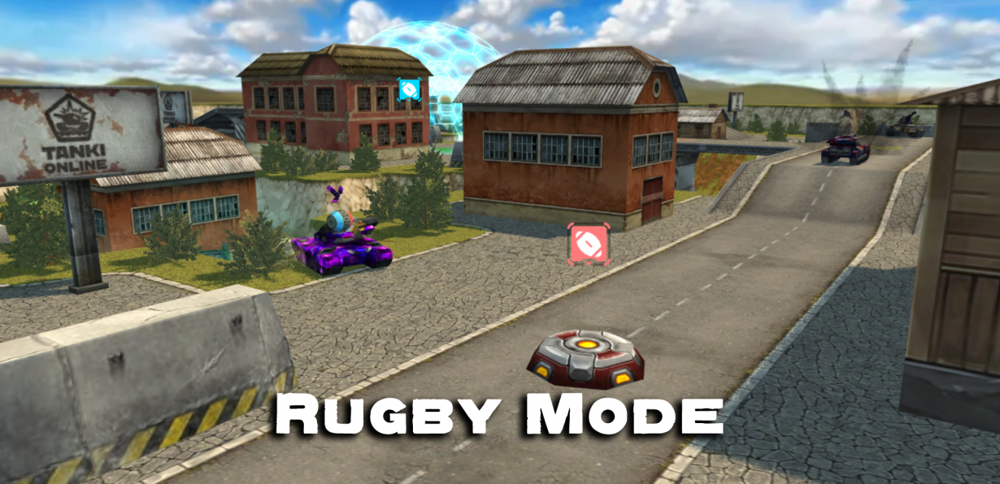
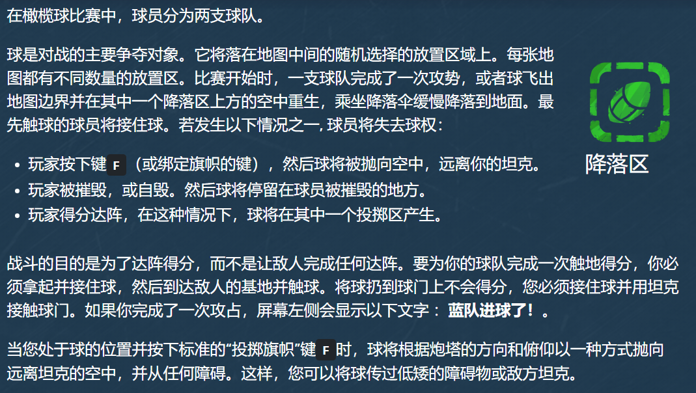
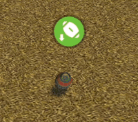
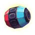

概括
橄榄球是一种互动游戏模式。
橄榄球的目标基本上是捕获橄榄球球并将其传递给敌方球队的目标，
以及阻止敌人作为回报夺取球并将其传递给您的目标。
战斗受限于得分（标准战斗中为 7 分）或时间（标准战斗中为 15 分钟）
描述
在橄榄球比赛中，每张地图都有两个基地——红色和蓝色——以及几个落球区。
球将被扔到这些区域之一，随机选择，它会有一个降落伞，类似于道具降落。
目标是接住掉落的球，与多个队友组队，闯入敌人的防线并获得球。
如果持球者被击杀，球会掉到地上，然后可以被任同一个团队的另一名玩家捡起
但这必须在新球随机落在指定区域(旧球爆炸)之前完成。
但是，如果它通过降落伞到达降落区并且还没有人捡起它，它将无限期地留在原地。
如果它是由玩家或从传球中掉落的，一段时间后它会消失。
该模式最酷的功能是能够将球传给另一名玩家。如果你按下
F 键（或者你绑定的丢掉旗子的键）
球会朝你的炮塔当前面对的方向射出，并且它会从任何障碍物反弹。
这样，您就可以将球传过低矮的障碍物或敌方坦克。
如果您看到敌人拿着球逃跑，您绝对应该摧毁他们，因为您将能够拿起球并开始自己的攻击。


橄榄球自毁
图标和指示器

球
对战中的主要争夺对象
橄榄球降落区
战斗开始时、进球后或球自毁后球掉落的地方。
我方基地
我们必须要保护好自己的基地，防止对方球员将球带入我方基地
敌方基地
我们的任务是将球带入敌方基地
我方球员正携带着球
尽可能的保护我方携带球的球员
敌方球员正携带着球
尽可能优先击杀敌方携带球的球员

此时球没有被任何人携带
尽可能的抢到球，抢到球的球队将会有很大优势
有趣的事实
橄榄球于 2018 年 1 月 27 日加入游戏。
橄榄球模式于2018 年 2 月 23 日被添加为地图运动场的 PRO 战斗模式。
当球被接住时，它会在炮塔上方旋转。
当球被抛出时，它会真实地在空中旋转。
自毁后，玩家将失去 10 分的战斗分数，并以他们的名义失去 1 次击杀
如果玩家成功击杀敌人，他们将获得 40 点经验值和 15 点战斗分数
如果玩家协助消灭敌人，他们将获得 5 点战斗分数以及 20 点经验值
使用磁力炮治疗玩家最多可获得 12 点战斗力和 20 经验值
在橄榄球模式中进球的玩家将获得 40 点经验值以及 50 点的战斗分数。
两名或两名以上协助进球的球员获得 20 经验值以及 25 分的战斗分数。
匹配橄榄球比赛的队伍标准最大进球数为 7。
如果球超出地图的可访问边界，或者被玩家丢掉后超过 30 秒没有被任何玩家抓住，它将自毁。